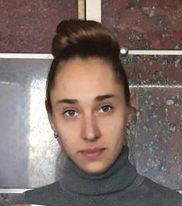

Ekaterina Vepritskaya

I enjoy to work in the field of e-commerce and currently study front-end development. I would like to get to know SEO secrets. I used to work as an interpreter (English, French), a teacher of foreign languages, an SEO content writer, an account manager (etsy, ebay, amazon, shopify and local marketplaces). Books and minerals are my passion.
General work experience
- Sales Manager in Barracuda - Aug 2019 – Present
- Account Manager in Aragonit - Mar 2012 – Dec 2018
- Teacher of Foreigh Languages in Kherson Academic Lyceum - Sep 2010 - Mar 2012
- Junior Manager in Metal Warehouse Vidzev - July 2006 - Aug 2006
Additional work experience (temporary job of short terms)
- Content Writer
- Scientific Publications, Projects, Essays Writer
- French and English Translator / Interpreter
- Private Teacher of Foreign Languages
- Sales Manager of various goods
Education
- State Property Fund - Appraisal of cultural valuables - 2018 – 2019
- SGCU - Classification and testing of natural and lab-created gemstones - 2016 – 2018
- Kherson State University - Master's degree - Foreign Languages, Literatures, Linguistics, Teaching (English, French) - 2006 - 2012
- Academic Lyceum - Foreign Languages and Literatures (French, English) - 2003 - 2006
- Kherson School №27 specialized on informatics and foreign languages
Languages
Contact:
Send me email.
Call me.
Or send a carrier pigeon to:
Kiev, 03067
poste restante